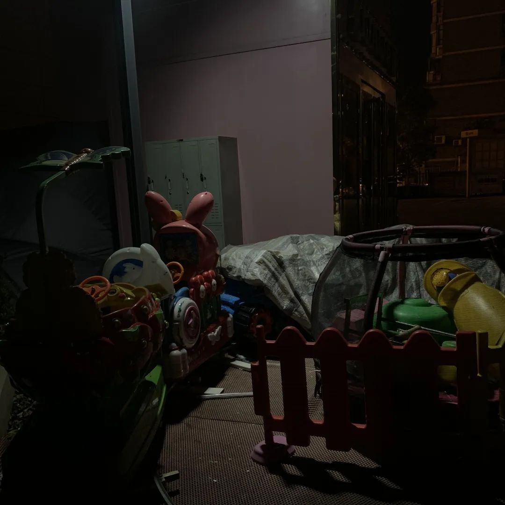
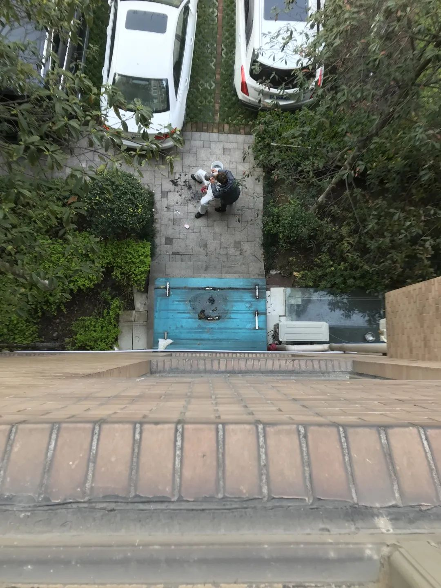
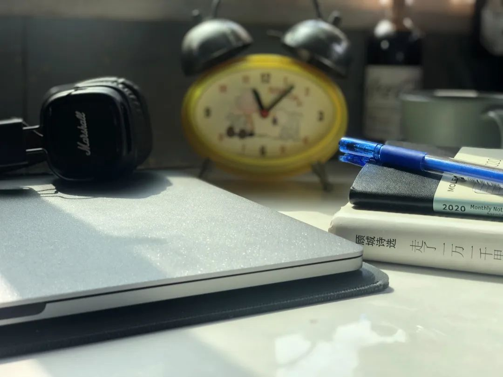

“封城”一月：武汉生活图鉴
原文链接 备份链接 经历整整31天的艰难考验之后，武汉疫情防控已经从无序走向有序，但千万居民的生活从无序到有序才刚刚开始，这个疫情核心区的社会经济生活全面恢复，还面临很多挑战 2020年2月11日，武汉市洪山体育馆武昌方舱医院，社区工作人 …


转眼已是春分，我们还没来得及去感知，2020年的春天就快要走到尽头。
今年的春天注定会被我们记得。它会在以后的春天里，某个我们突然放松下来的时候，再次于脑海中闪回。
这一年春天我们没有走出家门，而是在封闭近两个月后，在网上和几百万人一起看了一场樱花直播。
这一年春天我们认识了很多人，被消失的吹哨人，冲在前线的医护工作者，激情汉骂的武汉嫂子们还有数不清的志愿者。
这一年的春天是白色的，是一纸纸通告，一件件防护服和一些来不及说再见的苍白离别。

这一年春天被很多味道覆盖，青草的味道，口罩的无纺布味道，消毒水的味道，酒精挥发的味道。
这一年春天我们听到很多声音，寻常的或者特别的，有意义的或者无意义的。
它们组成了2020年武汉的春天。
*【鸟叫】*
@二十四口
朦朦胧胧中，被社区消毒拖车经过的刺耳声吵醒后，一般还需要睡一个回笼觉才能彻底清醒。会不自觉问自己“今天多少号，今天星期几”，思考片刻后又觉得无意义。去到洗手间，楼上邻居家的声音顺着下水道传进窗户，隔着好几堵墙，也能清晰听到奶奶和和孙女在说笑，话题跟甜玉米和糯玉米有关。
忍不住停下手头的动作，把耳朵更贴近窗户，变态般的动作只为听到更多的对话，谁叫这声音让我感到安心。可惜对话却停止了，只剩另一方向传来的清脆鸟鸣。
平时赏心悦耳的鸟叫声，此时此刻却全比不上平时被视为噪音的喧嚷，因为只有人的声音才能让一切显得正常。

空无一人的小区花园
阳台上，明媚的阳光斜射在脏衣篓，静好的画面让我忘记身上的睡衣已经穿了快30天。武汉的春本就短暂，今年的春装更是出彩无望。
静静地，楼下的粉色小花开了，风也褪去了冰凉，我多么希望这只是一个普通的星期六早上。
【 狗吠声 】
@慕遥
这个春天，我常常是在中午才在楼下一家人大嗓门的喊叫式对话中醒来。这在平时看来近乎噪音的声音，竟然成为疫情中难得能接触到的“人气儿”。
楼下那家有一块很大的空中平台，养着花，种着菜，还养着猫和狗。搬过来这么久，我才知道平日里震天的狗吠声竟然全来自三只小小的、黑色的、我不知道品种的狗。

这些日子，只要没事我就会坐在阳台上，看他们家的狗狗或打闹喊叫，或不停跑动，或安静地趴在那里。我甚至从中体会到一种偷偷窃取别人快乐的刺激，获得诡异的满足感。
有时候也会对它们产生奇怪的羡慕之情——这个春天，它们尚有一块空旷地方可以撒欢，可以自由地感受春风拂面，不必隔着窗户窥看新开的花，也不用担忧着那不知何时才能彻底过去的疫情。
属于我们的春天呢，何时才会到来？
【割草声】
@鸭纸
安静的午后，屋外传来阵阵嗡嗡的响声，探头望去，发现原来是环卫工正在割草。
她穿着厚厚的防护服，全副武装地行走在一片绽放的迎春花中。雨后特有的泥土清香也在这时钻进我的鼻子里，真是令人怀念的味道。封城已有快两个月，脑海中关于外面世界的印象开始有些模糊起来。
草长高了，风变暖了，樱花也开了，春天已经来了，距离疫情结束的日子进入倒计时了。想必不久后，就可以痛痛快快地在草地里打滚了吧。

3月18日窗外的武汉夕阳
【“武汉加油”】
@Ailsa
1月27日20：00，不少武汉市民在小区自发开窗集体隔空高歌《义勇军进行曲》《我和我的祖国》，小区广播也随之“伴奏”。从此起彼伏到越来越整齐洪亮，大家仿佛要在呐喊和歌声中将突如其来的疫情给造成的恐慌、迷茫、压抑、痛苦，全部表达和释放。
“武汉加油”这四个字不仅仅是对武汉的祝福和祈祷，也是我们给予自己的鼓励。期待武汉痊愈的那一天，期待繁花盛开的春天。
【朋友的歌声】
@符煕朝
今年的春天，我一个人在武汉。屋子里总是安静的，哪怕是打游戏也只有敲键盘的声音。
隔绝和寂静给了人放松的借口，至少在游戏中，我不是一个人。那次，无意中看到高中时最好的朋友也在线，虽然很久没有跟她说过话，不知道关系还是不是像从前，但还是鼓起勇气问她要不要一起玩。
从那之后，我便找到了一个有些“聒噪”的排遣方式，就是每天准时和她打游戏。每天下午三点开始，房间里我的笑声会淹没周围的一切。

疫情中被废弃的小型游乐场
不打游戏的时候我们就一起看《甄嬛传》，打游戏的时候就一起讲《甄嬛传》里的笑梗，好几次听她唱这首歌我都笑到脸疼，好几次我没辅助好，她就会突然冒出一句“你伺候本宫？”
这样的日子让竟让我产生了一种回到高中时代的错觉。就好像，天真的少年一直住在我们心里，只要我们按下停止按钮，少年便不会长大，永远年轻，永远有趣。
【小区广播】
@慕遥
“各位业主现在是新型肺炎防控非常时期，请各位业主尽量少出门，多通风，勤洗手，戴口罩……”
小区内的广播声会在每天下午四点准时响起。保安大叔拎着喇叭，围着不大的中心花园走上一圈，完成今天的通知任务。

正在剃头的保安大叔
往常这个时候，篮球场上拍打篮球的声音已经清晰可闻，游乐区里孩子的嬉笑声和跷跷板弹簧的咿呀声此起彼伏。春天本该是放纵欢愉的季节，而今年，寂静掩下喧嚣，空旷取代人潮。
已近四月，春天还在奔赴而来的路上。
【消毒车BGM】
@高雨欣
从被“关”在家里开始，我对窗外的一切事情就变得充满兴趣（上一次有这种感觉还是在高三写作业的时候），而等待下午3点驶进小区的消毒车则成了我最快乐的事。
当消毒车自带的BGM响起时，我就像个顿悟的信徒一样立刻跑到阳台安静地观摩。
我看到对面楼的某个叔叔和我一样积极的打开了窗，甚至还朝我挥了挥手。在这个春天里难得的乐声中，我们都在贪婪地汲取着可以被感知到的细微的乐趣。
【小推车滚轮声】
@Ailsa
封城、封小区、自行采购变成了小区团购，每家每户每次的生活物资的采购数量之大，都仿佛要让家里成为“小型批发市场”，大量囤积生活物资，才能换取安心。
周围的人们都在自觉地减少出门次数，隔绝流动。平日待在家里，偶尔能听见小区里其他业主推着小推车出门，滚轮与地面摩擦的声音或由远及近、或由近及远，才真切感受到这座空荡的城市里依然有许多人在生活着。
【钟声】
@家乐福海盗
夜里惊醒，万籁俱寂。躺在床上的我，第一次听到房间里3个钟秒针走动的声音。
上学的时候，为了时刻提醒自己“时间不多了”，我把房间里的三个钟都调快了5～10分钟不等。
大学毕业以后，从没有在家里住这么久，早已经忘了自己把钟调快过。而那天晚上听到三个钟的嘀嗒声，才想起来。
那天以后，这三个钟的存在感变强了。我会坐在书桌前，看着秒针走到12，分针离下一个数字又向前一步。在过去看来浪费时间的奢侈行为，成了这个春天里心安理得的休息行为。
毕竟，这个春天留给我们最多的就是时间。

早上9点起床，9点半早餐、10点打扫房间，陪家人看半个小时新闻以后坐在书桌前开始工作或看书。下午2点吃饭，3点洗碗，3点半又坐回书桌前，直到晚上7点。伴着新闻联播吃完晚餐后，8点健身，9点洗澡，9点半躺上床，看电影到12点，睡觉……如此，复制粘贴似的开始新的一天。
这好像是一个拿时间没什么办法的春天，不过我们还有立下flag的习惯，只不过实施的时间变成了“解封以后”。
你有没有发现，那些去年冬天不会做的事情，今年春天你仍然不会做。关在家里的我们就算把时间流逝的声音听得再清楚，也未曾把那些早都该做的事情提上日程。
如果想做，你早都做了。
text | 慕遥
photo | 李梦/SANTA/受访者提供
💬
# 你的2020春天，是什么声音？#


原文链接 备份链接 经历整整31天的艰难考验之后，武汉疫情防控已经从无序走向有序，但千万居民的生活从无序到有序才刚刚开始，这个疫情核心区的社会经济生活全面恢复，还面临很多挑战 2020年2月11日，武汉市洪山体育馆武昌方舱医院，社区工作人 …
原文链接 备份链接 今天，湖北卫健委消息，武汉市新冠肺炎确诊人数，0，新增疑似，0，现有疑似，0。 “没有什么胜利可言，挺住意味着一切。”在漫长的冬天和半个春天之后，我们终于等到了这个我们之前的人生里，从来不曾期待过的数字。 今天，武汉确 …
原文链接 备份链接 “湖北和武汉医疗救治、社区防控和后续工作任务依然艰巨繁重，其他地区人员流动和聚集增加带来疫情反弹风险依然存在。”唯有继续加大防控和排查力度，才有可能避免新冠肺炎疫情再次局部暴发 3月18日，武汉协和医院心外科候诊区，医 …
原文链接 备份链接 记者/郭慧敏 编辑/石爱华 宋建华 杨鹏在病房里查房 随着疫情防控形势转好，完成救助任务的各地医疗队开始分批离鄂。3月17日，41支国家医疗队3675人踏上返程。 杨鹏所属的中日友好医院援鄂重症医疗队，是国家卫健委所属 …
原文链接 备份链接 新冠疫情的肆虐，对各行各业都造成不小的冲击，企业纷纷亮起红灯。 前有西贝老板在采访视频里说“现金撑不过三个月”，后来单向街书店通过官方微信号向大众众筹。这些知名度高的品牌尚可通过媒体发声或求助，那些街头小店的老板们，特 …